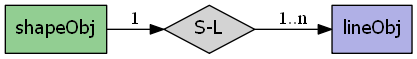

mapscript.shapeObj¶
- class mapscript.shapeObj(type: int = <MagicMock id='140469958012816'>)¶
Each feature of a layer’s data is a
shapeObj. Each part of the shape is a closedlineObj.Overview
The shapeObj has the following relationships:
Attributes
boundsrectObjBounding box of shapeclassindexint The class index for features of a classified layer
indexlong Feature index within the layer
itemdefinitionsnumlinesint immutable Number of parts
numvaluesint immutable Number of shape attributes
resultindexint Index within a query result set
scratchint TODO Add documentation
textchar Shape annotation
thisownThe membership flag
tileindexint Index of tiled file for tile-indexed layers
typeint MS_SHAPE_POINT, MS_SHAPE_LINE, MS_SHAPE_POLYGON, or MS_SHAPE_NULL
Methods
- Union(shape: shapeObj) shapeObj[source]¶
Returns the union of the existing and supplied shape. Shapes must be of the same type. Requires GEOS support. Returns NULL/undef on failure.
- __init__(type: int = <MagicMock id='140469958012816'>)[source]¶
Return a new shapeObj of the specified type. See the type attribute. No attribute values created by default. initValues should be explicitly called to create the required number of values. Each feature of a layer’s data is a shapeObj. Each part of the shape is a closed
lineObj
- add(line: lineObj) int[source]¶
Add line (i.e. a part) to the shape. Returns
MS_SUCCESSorMS_FAILURE
- boundary() shapeObj[source]¶
Returns the boundary of the existing shape. Requires GEOS support. Returns NULL/undef on failure.
- buffer(width: double) shapeObj[source]¶
Returns a new buffered shapeObj based on the supplied distance (given in the coordinates of the existing shapeObj). Requires GEOS support. Returns NULL/undefined on failure.
- clone() shapeObj[source]¶
Return an independent copy of the shape.
Note
In the Java & PHP modules this method is named
cloneShape.
- contains(*args) int[source]¶
Overload 1: Returns
MS_TRUEif shape2 is entirely inside the shape, returns -1 on error andMS_FALSEotherwise. Requires GEOS support.Overload 2: Returns
MS_TRUEif the point is inside the shape,MS_FALSEotherwise
- convexHull() shapeObj[source]¶
Returns the convex hull of the existing shape. Requires GEOS support. Returns NULL/undef on failure.
- copy(dest: shapeObj) int[source]¶
Copy the shape to shape_copy. Returns
MS_SUCCESSorMS_FAILURE
- crosses(shape: shapeObj) int[source]¶
Returns
MS_TRUEif shape2 crosses the shape, returns -1 on error andMS_FALSEotherwise. Requires GEOS support.
- difference(shape: shapeObj) shapeObj[source]¶
Returns the computed difference of the supplied and existing shape. Requires GEOS support. Returns NULL/undef on failure.
- disjoint(shape: shapeObj) int[source]¶
Returns
MS_TRUEif shape and shape2 are disjoint, returns -1 on error andMS_FALSEotherwise. Requires GEOS support.
- draw(map: mapObj, layer: layerObj, image: imageObj) int[source]¶
Draws the individual shape using layer. Returns
MS_SUCCESSorMS_FAILURE
- equals(shape: shapeObj) int[source]¶
Returns
MS_TRUEif shape and shape2 are equal (geometry only), returns -1 on error andMS_FALSEotherwise. Requires GEOS support.
- static fromWKT(wkt: char) shapeObj[source]¶
Returns a new shapeObj based on a well-known text representation of a geometry. Requires GEOS support. Returns NULL/undef on failure.
- get(i: int) lineObj[source]¶
Returns a reference to part at index. Reference is valid only during the life of the shapeObj.
- getCentroid() pointObj[source]¶
Returns the centroid for the existing shape. Requires GEOS support. Returns NULL/undef on failure.
- intersection(shape: shapeObj) shapeObj[source]¶
Returns the computed intersection of the supplied and existing shape. Requires GEOS support. Returns NULL/undef on failure.
- intersects(shape: shapeObj) int[source]¶
Returns
MS_TRUEif shape and shape2 intersect, andMS_FALSEotherwise. Does not require GEOS support but will use GEOS functions if available.
- overlaps(shape: shapeObj) int[source]¶
Returns
MS_TRUEif shape2 overlaps shape, returns -1 on error andMS_FALSEotherwise. Requires GEOS support.
- project(*args) int[source]¶
Overload 1: Reproject shape from proj_in to proj_out. Transformation is done in place. Returns
MS_SUCCESSorMS_FAILUREOverload 2: Reproject shape given a reprojection object. Transformation is done in place. Returns
MS_SUCCESSorMS_FAILURE
- setBounds() void[source]¶
Must be called to calculate new bounding box after new parts have been added. TODO: should return int and set msSetError.
- simplify(tolerance: double) shapeObj[source]¶
Given a tolerance, returns a simplified shape object or NULL on error. Requires GEOS support (>=3.0).
- symDifference(shape: shapeObj) shapeObj[source]¶
Returns the computed symmetric difference of the supplied and existing shape. Requires GEOS support. Returns NULL/undef on failure.
- toWKT() char[source]¶
Returns the well - known text representation of a shapeObj. Requires GEOS support.Returns NULL / undefined on failure.
- topologyPreservingSimplify(tolerance: double) shapeObj[source]¶
Given a tolerance, returns a simplified shape object or NULL on error. Requires GEOS support (>=3.0).